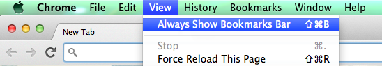
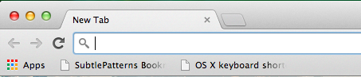
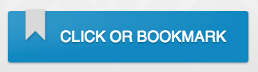

Lightning Talk:
Responsive Design & Tools
Christina Truong
hello@christinatruong.com
christinatruong.com //
@christinatruong
Thanks to CoderDeck for the interactive code slides.
Slides also available on Github.
What is Responsive Web Design?
With the introduction of Ethan Marcotte’s responsive web design approach, there’s been a flurry of excitement around the idea that one website could target multiple screens. Fluid websites are nothing new but with the introduction of CSS3 media queries, one site can now adapt gracefully between different resolution sizes and respond accordingly to the context being viewed by the user. Fluid grid designs also allow for a consistent multi-screen experience while maintaining one codebase.
No screen left behind: Creating a digital experience for multiple devices - Christina Truong
What is Responsive Web Design?
- Aims to provide the best experience for any device size.
- One website that reacts to its viewport (the size of the viewing area).
- Adapts the layout to the viewing environment by using fluid, proportion-based grids, flexible images.
- Page components are rearranged based on device size as well as device-based user behaviours.
Responsive vs Mobile Web
You may have seen a website redirect from yoursite.com to m.yoursite.com when viewed on a phone or tablet. That's because they are two separate sites. One for desktop and one for mobile.
Let's take a look at an example of a mobile & desktop site, flickr.com and m.flickr.com.
Responsive web design is not the magic solution but it is a great alternative to creating a separate desktop and mobile site.
mediaqueri.es houses a collection of responsive websites. Take a look at a few sites and see how the layouts change when the browser window size changes.
Responsive vs Fluid
Fluid designs are created by using percentage widths, therefore becoming relative to the size of the viewport.
Fluid designs create a more flexible layout and generally works well in a desktop context but begins to not function as well when going into smaller resolutions.
A List Apart - Flexible design example
A List Apart - Responsive design example
A List Apart - Full article
Responsive Techniques
Media Queries, Breakpoints and Tools
Media Queries
Media Queries are the key to making a site responsive. It is used to apply CSS only when the screen has reached a certain size.
Lets take a look at a basic media query:
@media screen and (max-width: 480px) {
body {
background: red;
}
}
According to the above condition, any screen equal to or less than 480px wide resolution will have a red background.
Media Queries
Notice how we nested our CSS inside the media query? If we had more than one rule it would look like this:
@media (max-width: 480px) {
body {
background: red;
}
h2 {
font-size: 20px;
}
}
The above CSS gets applied when the browser reaches a width of 480px or smaller. This is what we call a breakpoint .
Common Break Points
- 320px & 480px — Mobile portrait & landscape
- 600px — Small tablet
- 768px — Tablet portrait
- 940px - 1024px — Tablet landscape, netbook, small desktop
- 1280px & greater — Desktop
These are just general guidelines. Depending on the project, you may need to target different resolutions and add media queries at different breakpoints.
A good rule of thumb is to have at least have 3 breakpoints to optimize for phones, tablets and desktops/laptops. On the flip side, avoid using too many media queries as well!
Don't Forget the Viewport Meta Tag!
The viewport meta tag is required and is included in the <head> to ensure that the page responds on mobile devices.
<meta name="viewport" content="width=device-width, initial-scale=1.0">
- meta - Tag name. Goes in the
<head>.
- name="viewport" - Used to tell the browser information about the sizing abilities of the site.
- content - Provides information about the viewport. Single or multiple key=value pairs are added as needed here, each comma separated.
- width=device-width - Tells the browser how wide the website should be.
- initial-scale - Is the value at which the site is zoomed in/out by default.
More Viewport Options
<meta name="viewport" content="width=device-width, initial-scale=1.0, user-scalable=no, maximum-scale=1">
- user-scalable=no - Limit users from being able to zoom into your website.
- minimum-scale, maximum-scale - Limits how far the user can scale/zoom.
Note that for accessibility reasons, these options should be avoided when possible.
Resource: Quick Tip: Don't Forget the Viewport Meta Tag
Chrome Developer Tools
Developer tools allow us to inspect any web page and see the code.
These tools make it easier to test and debug code as well as allow us to experiment with elements on the page without touching the actual source files. It can be accessed in 3 ways:
- right-click on a web page and select Inspect Element OR
- select the menu icon
 in the top right hand corner of the Chrome browser and select Tools > Developer Tools OR
in the top right hand corner of the Chrome browser and select Tools > Developer Tools OR
- keyboard shortcut: Cmnd + Option + I (Mac) / Ctrl + Shift + I (PC)
Extra resource: Chrome Developer Tools
Testing Mobile in the Browser
When creating mobile friendly sites, it's always best to test on an actual device. However, there are a lot of interesting tools available for testing in the browser. Today we will look at the Viewport Resizer Responsive Design Bookmarklet:
Go to Chrome and select View > Always Show Bookmark Bar

Your bookmark bar should now appear under the address bar.

Go to Viewport Resizer
Responsive Design Bookmarklet and add this bookmarklet to your bookmarks bar by clicking the button once, hold and drag it to your bookmarks bar.

You should now see the Resizr bookmarklet in you toolbar.
Additional Resources
Thank you!